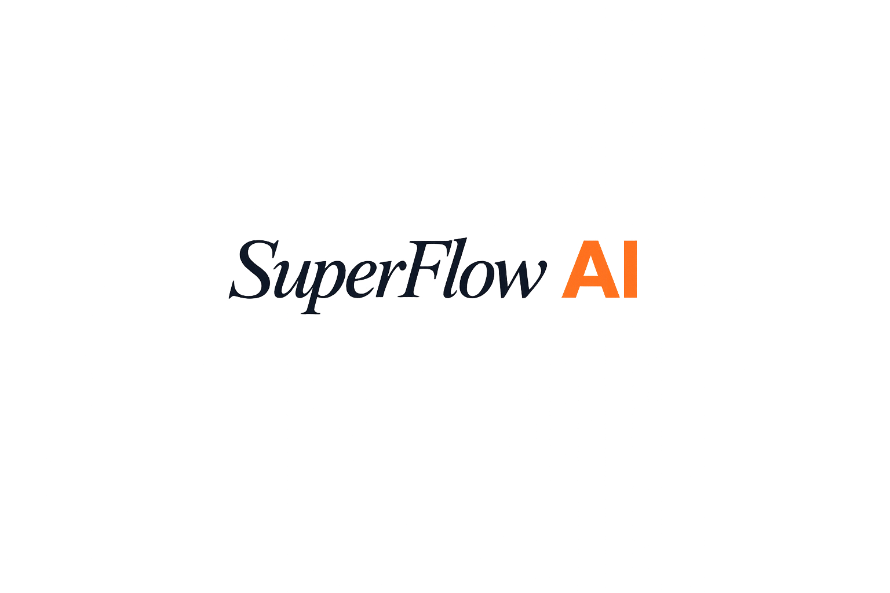

How It Works
- Open Super Flow.
- Select your microphone.
- Hold Ctrl+Space to start dictation.
- Release to transcribe and auto-paste text.

Windows Desktop App
Completely free. Built for vibe coding, email, posting, and everything else. Open the app, hold Ctrl+Space, talk, and release to paste at your cursor. Ctrl+H is also available for popup flow.
Enable control mode to hold Ctrl+Space while speaking. Release to transcribe and paste. Fast and clean for coding flow.
No permanent chat storage by default. Your current session writes to a temporary PDF. On close, Super Flow warns you so you can export before data is gone.
Uses local, open-source speech recognition to avoid API costs and keep control in your hands. Zero required subscription for core usage.